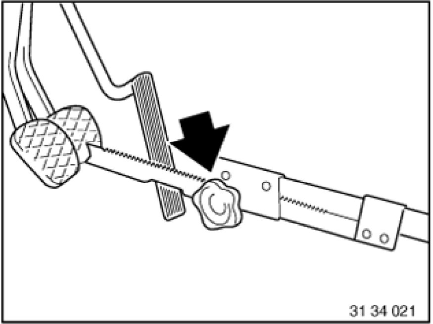
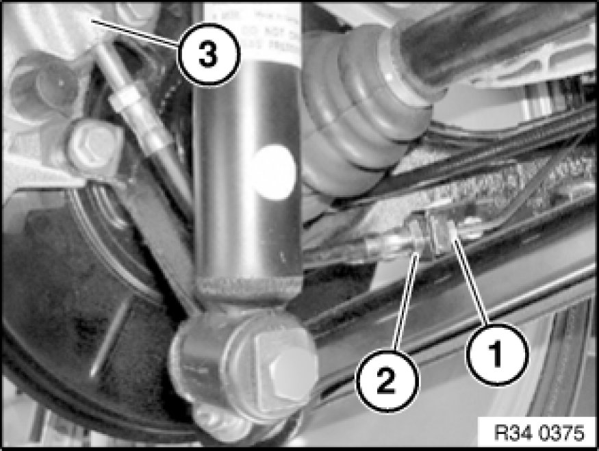
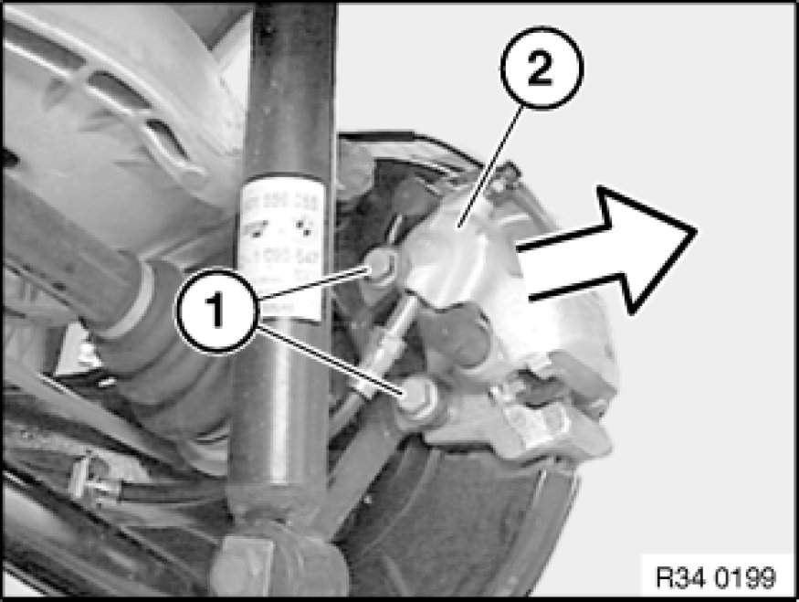

Removing and Installing/Replacing Left or Right Rear Brake Caliper
34 21 745 - Removing and installing/replacing left or right rear brake caliper

Necessary preliminary tasks:
- Remove rear wheel Removing or Installing Front or Rear Wheel.
After completing work: Bleed braking system Bleeding Brake System with DSC

Press clutch pedal down to floor and secure with pedal support.
Note:
The pedal support may only be released when the brake lines are reconnected.
This prevents brake fluid from emerging from the expansion tank and air from entering the system when the brake lines are opened.

Important!
Install brake hose without torsional stress.
First tighten the brake hose on the brake cover, then tighten connection on brake line.
Never twist brake hose when installing it and avoid all contact with parts attached rigidly to the body.
Slacken union nut (1); to do so, grip brake hose at square (2).
Installation:
Tightening torque 34 32 1AZ 34 32 Brake Lines.
Detach brake hose from brake calliper (3).
Installation:
Tightening torque 34 32 2AZ 34 32 Brake Lines.

Release screws (1).
Installation:
Tightening torque 34 21 3AZ 34 21 Rear Brake.
Right side:
Disconnect plug connection for brake lining wear sensor.
Pull off fist caliper towards rear of vehicle.